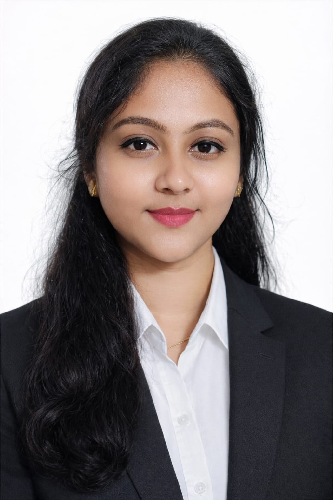

Aspiring Engineer | AIML & Programming Enthusiast | AI Intern @Wipro 3D | Experience in AI for Animation & Content Creation | Prompt Engineering
B. Tech pursuing student (Aspiring Engineer) at Presidency University with a strong interest in Artificial Intelligence, Machine Learning, and Data Science with hands-on experience in Deep Learning, Reinforcement Learning (DQN), and IoT-based systems.
Skilled in Python, Data Structures, and database management with a strong focus on solving real-world problems. Proven leadership experience in managing teams and organizing large-scale technical events.
I am a quick learner, adaptable, and consistent in my work, with strong problem-solving and communication skills. I actively seek opportunities to apply my technical knowledge through projects, internships, and collaborative work environments.
I am proficient in English, Kannada, Hindi, Telugu, and Tamil. Alongside my technical interests, I enjoy singing, cooking, volunteering, and actively contributing to student development and community activities.
Presidency University, Bangalore
2023 – 2027 | CGPA: 9.1
Reva Independent PU College
2021 – 2023 | 93%
RT Nagar Public School
2011 – 2020 | 89%